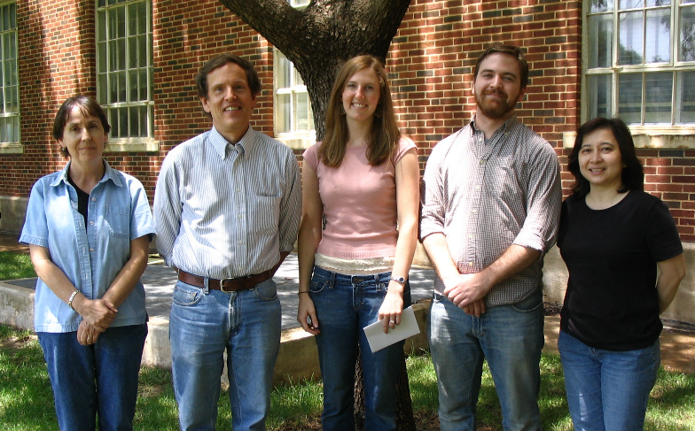
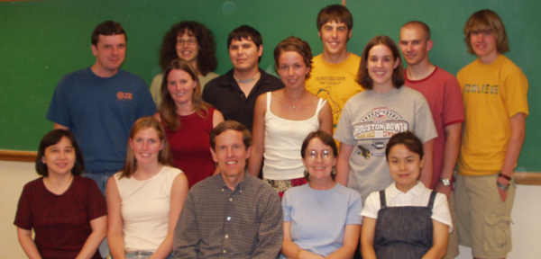
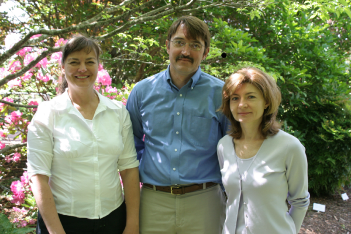

SeedGenes Participants
Oklahoma State University
Department of Botany
104 Life Sciences East
Stillwater, OK 74078 USA
Fax: 405-744-7074
104 Life Sciences East
Stillwater, OK 74078 USA
Fax: 405-744-7074
Active Personnel
| David Meinke
Principal Investigator | 405-744-6549 | meinke@okstate.edu |
| Rosanna Muralla | 405-744-9560 | rp.muralla@okstate.edu |
| Johnny Lloyd | 405-744-6549 | johnny.lloyd@okstate.edu |
| Nicole Bryant | 405-744-6549 | nicole.bryant@okstate.edu |
Meinke Lab, Summer 2007
Meinke Lab: Colleen Sweeney, David Meinke, Laura Simmons, Johnny Lloyd, Rosanna Muralla
Past Senior Personnel
Iris Tzafrir, OSU Project DirectorPast Contributors
Colleen Sweeney, Krista McGuire, Laura Simmons, Kyle Mackin, Eryn Sweeney-Demezas, Kelsey Wall, Chase Bennett, Scott Meinke, Sandrine Casanova, Becky Rogers, Michael Berg, Tsuyoshi Asako, Ryan Jenlink, Penny Hlubek, Amanda Cotton, Sara Fesler, Amy Fesler, Clay Holley, Christi Schultz, Billy Stewart, Shkelzen Shabani, Steven Hutchens, Anna Schissel, Audrey Martinez, Thomas Showalter, Josh Doran, Kelsey Smith, Amy Schetter, Mary Ann Cushman, Todd Nickle, Stephanie Blokowiak, Julie Aylward, Joel Davis, Ryan Bobsein, Dylan Jackson, Jia Qian Wu, Justin Rineer, Mike Rumbaugh, James Stanfield, Julie Guertin, Jennifer Stanfield, Amy Davis, Forrest Bath, Linda Franzmann.Meinke Lab, Summer 2003
Back Row: Michael Berg, Iris Tzafrir, Steven Hutchens, Thomas Showalter, Clay Holley, Scott Meinke; Middle Row: Becky Rogers, Sandrine Casanova, Amy Fesler; Front Row: Rosanna Muralla, Laura Meinke, David Meinke, Colleen Sweeney, Kang Liu.
Virginia Bioinformatics Institute
Bioinformatics Bldg.
Washington Street
Virginia Tech
Blacksburg, VA 24061 USA
Fax: 540-231-2606
Washington Street
Virginia Tech
Blacksburg, VA 24061 USA
Fax: 540-231-2606
Active Personnel
| Allan Dickerman
Co-Principal Investigator | 540-231-1397 | dickerman@vt.edu |
Dickerman Group, 2006
Johanna Craig, Allan Dickerman, Elena Shulaeva
Past Contributors
Elena Shulaeva, Kelly Williams, Yuying Tian, Johanna Craig, Sally Waldon, Paul Toffenetti, Ruth Howe, Olga Brazhnik, Jennifer Weller, Quoc Nguyen, Jiaxin Li, Karen Schlauch, Soma MarlaSyngenta
PO Box 12257
3054 Cornwallis Road
Research Triangle Park
NC 27709-2257 USA
3054 Cornwallis Road
Research Triangle Park
NC 27709-2257 USA
Past Senior Personnel
David Patton, Co-Principal InvestigatorPast Contributors
John McElver, Cathy Frye, George Aux, John Tossberg, Qing Zhou, Joshua Levin, Marcus Law
Carl Ashby, Carla Thomas, Karin Nelson, Ernie Madhavan, Jill Dunn, Eddie Cates, Lisa Davis, Katie Stokes, Caroline Durkin, Amy Gregowski, Sharon Potter-Lewis, Sandy Volrath,
Laura Weislo